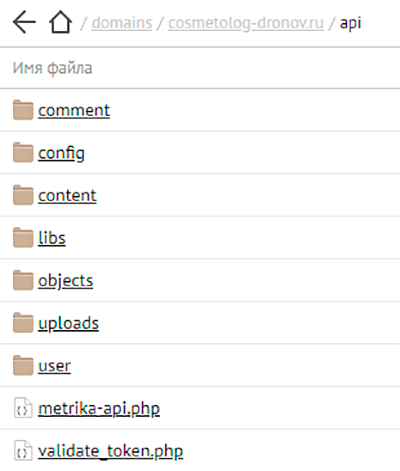
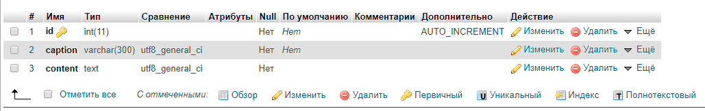

Создание REST API на PHP для Админки сайта
Проект разработан для взаимодействия с приложением Админ-панели персонального сайта врача COSMETOLOG-DRONOV.ru.
REST API создан на языке PHP. Приложение Админ-панели — на Vue.js.
Как происходит взаимодействие API с Админ-панелью:
- Во время Авторизации введенные данные в Login-форме с приложения уходят на this-api.ru/login.php
- Сервер проверяет введенные данные (логин и пароль), генерирует JWT токен и отправляет его клиенту.
- Клиент теперь при передаче любых запросов вслед должен сбрасывать свой токен.
- Сервер принимая запрос на получение данных валидирует полученный токен и разрешает либо запрещает доступ.
Основные моменты и что разработано:
- Подключение к базе данных и операции с ней происходят с помощью PDO технологии.
- Создание, кодирование и декодирование JWT (JSON Web Token) осуществляется с помощью библиотеки PHP-JWT.
- В проекте реализованы операции создания, чтения, обновления и удаления (CRUD) пользователей и комментариев. Для контентных блоков Обо мне и Контакты предусмотрено только чтение и обновление.
- Для Пользователей добавлена возможность загружать изображения (аватарки) на сервер, валидировать (размер и формат) и удалять прежние при смене аватарки.
Скриншоты
Структура папки API:

Таблица базы данных content:
